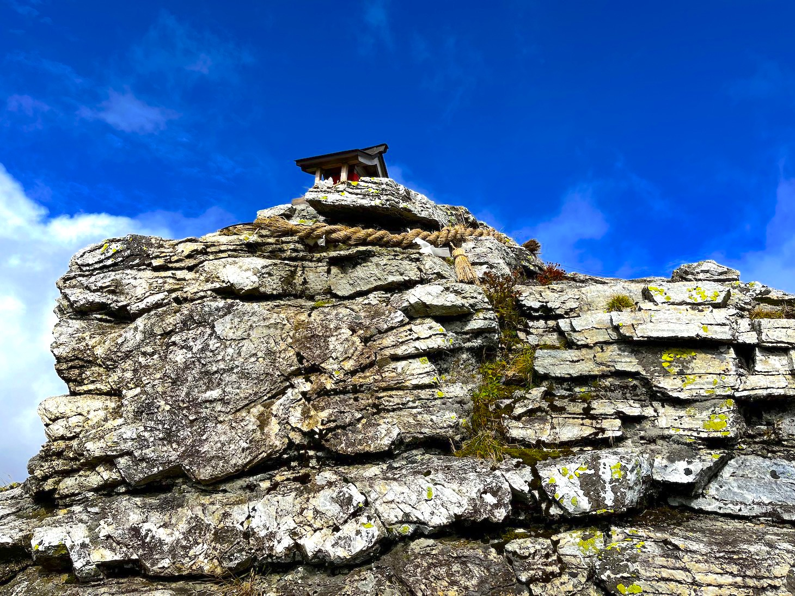
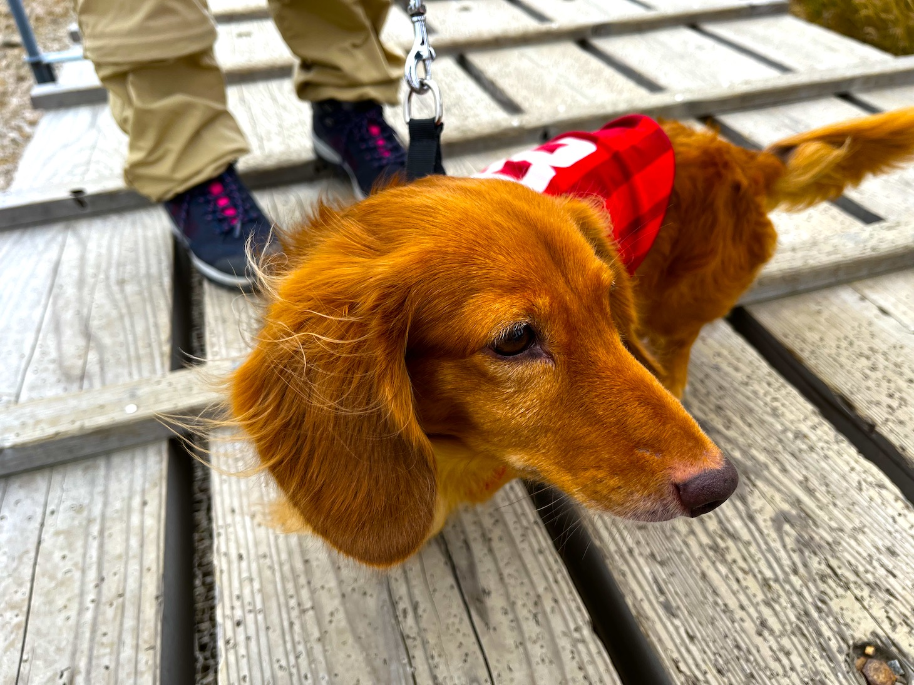
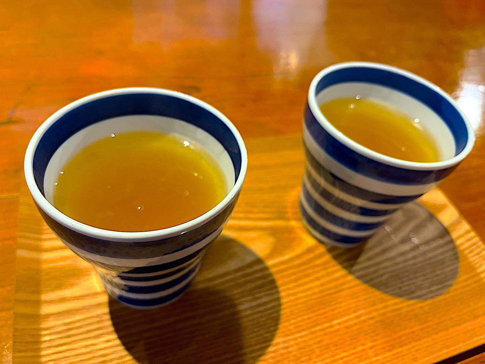
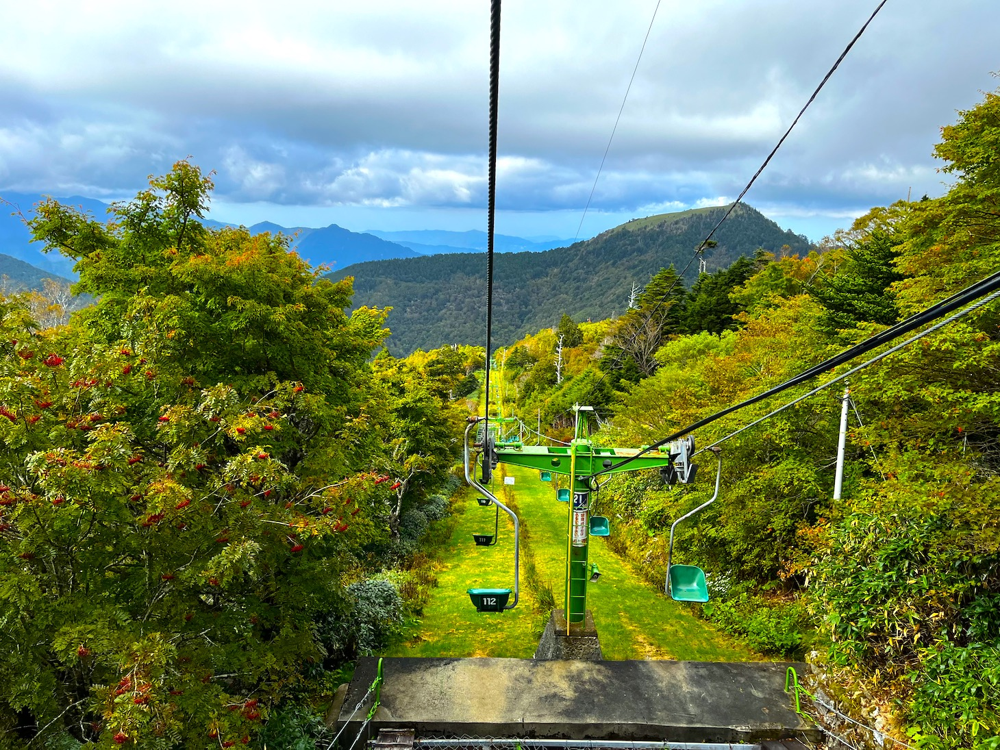
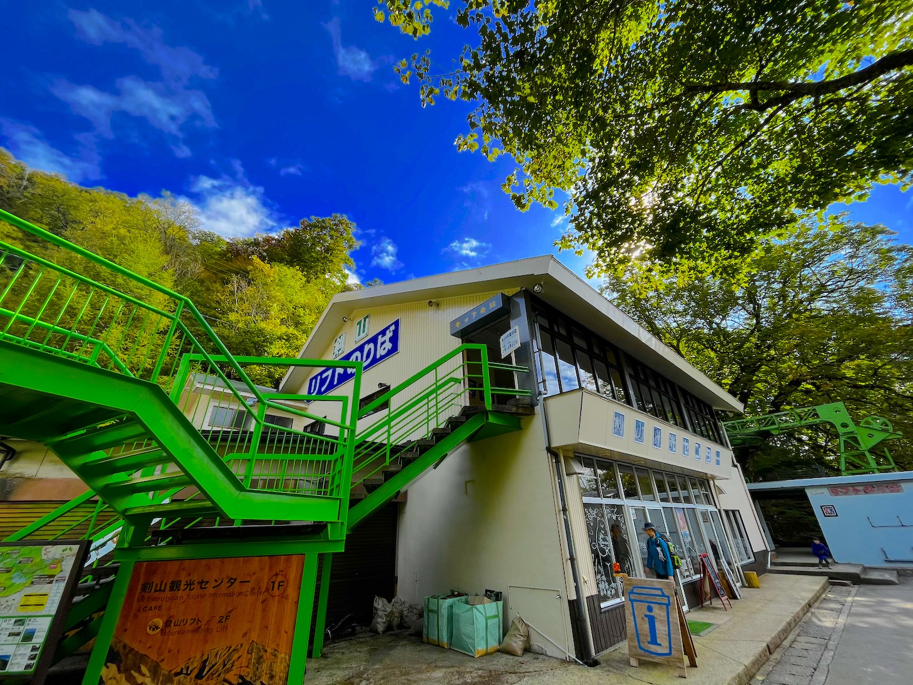
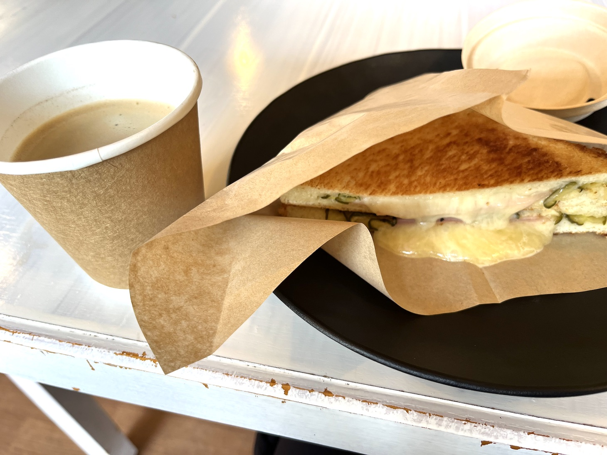
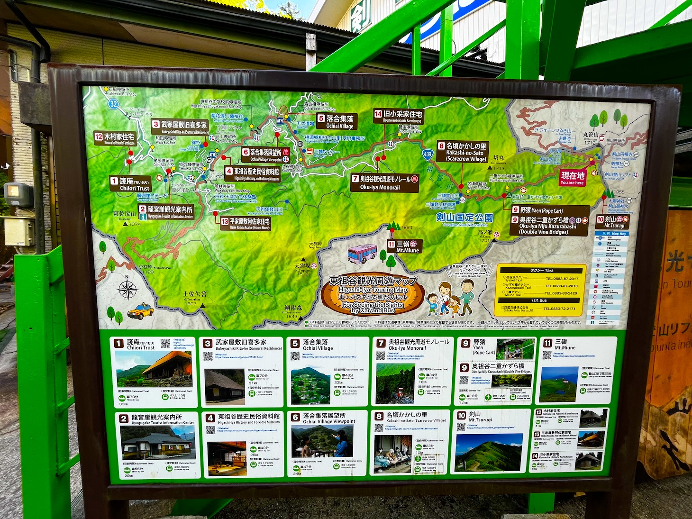
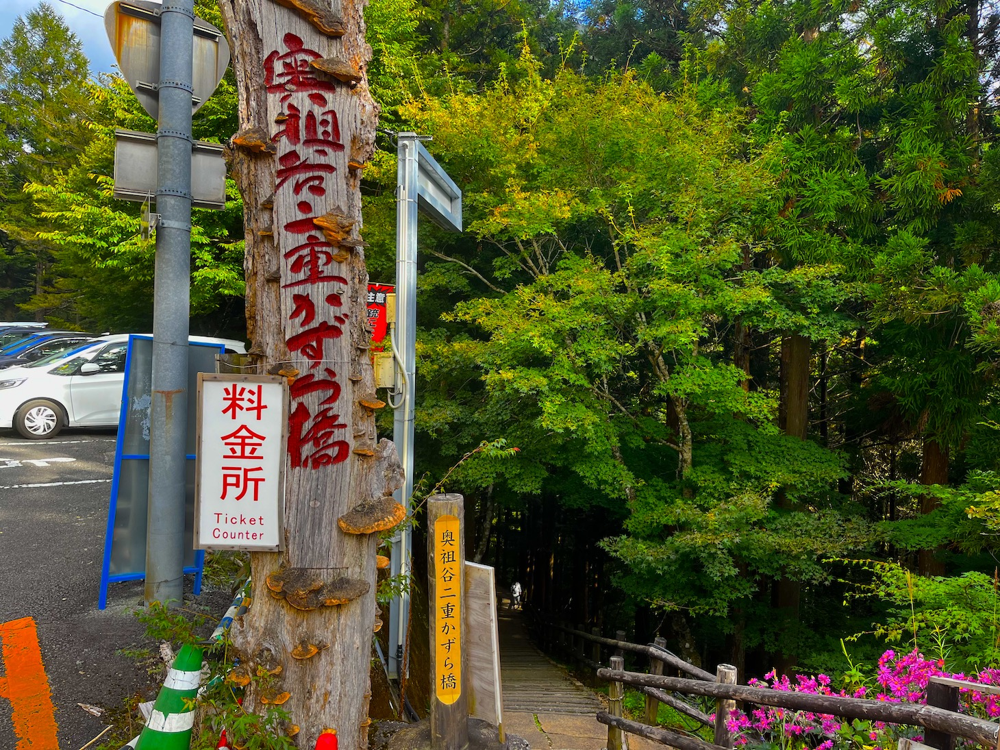
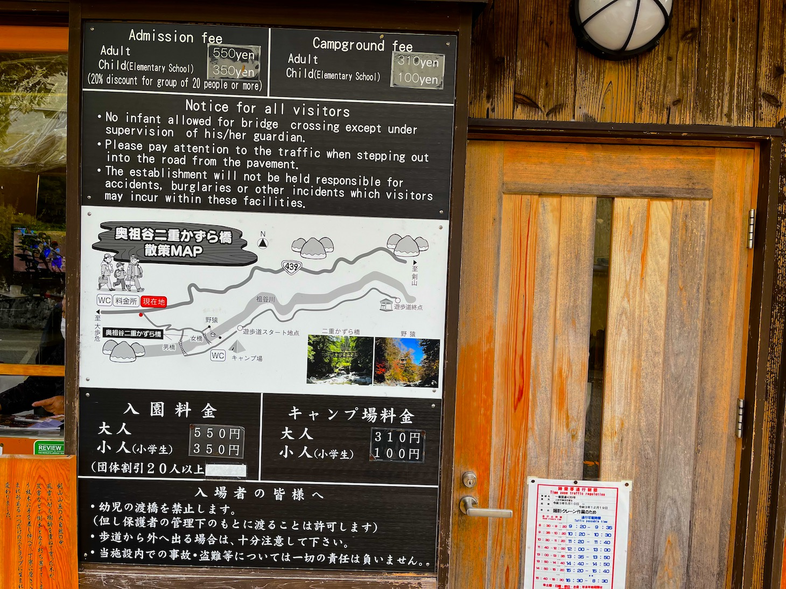
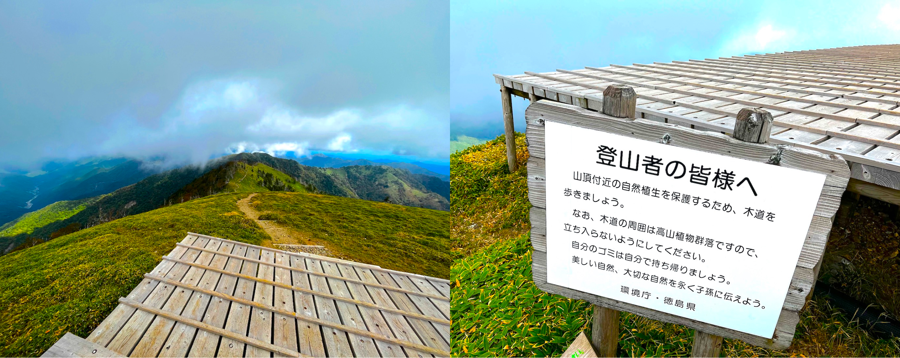

剣山へわんちゃんとGO後編
徳島の秘境・剣山にわんちゃんと一緒に行ってみよう!!後編

展望デッキには頂上まで元気に登ってきたワンちゃんもいました。

山小屋に戻ってあめゆで冷えた体を温めたら、下山開始です。(山小屋は人以外の動物は入れないのでわん ちゃんには外で待っていてもらいます)
下山は足の疲労も相まって、踏ん張りが効かなくなることがあるので注意して降りていきましょう。 (足が震えます)

リフトを使って登山口まで帰ってきました。

こちらの剣山観光センターさんでハムチーズトーストと湧水コーヒーをいただきました。

びっくりするくらい美味しいコーヒー!えぐみがなくスッと口から消えます。
トーストも味・ボリューム共に大満足。
飲食スペースにはストーブがあるのもありがたい。
こちらのお店も人以外は入れないのでワンちゃんは外で待っててもらいましょう。
テイクアウトもOKです。
到着からここまでの工程を4時間くらい。
もしまだ体力があるなら『奥祖谷の二重かずら橋』も目指してみましょう。
かずら橋は実は2箇所あって、有名な祖谷のかずら橋は40kmと1時間以上かかるのですが、こちらなら7kmと 近くておすすめ。
サイズは小さいですが、大小二橋の吊り橋がありまた違った良さがあります。
第2駐車場からだと15分程度で到着します。
駐車場も奥に行けば50台以上停めれるので安心。

こちらの施設もご厚意でワンちゃんOK。

料金所のスタッフさんが『さっきもワンちゃんがきてスタスタ橋渡っていったみたいよ〜』って。
料金所を下るとすぐに橋が見えてきます。
ワンちゃんが歩けるくらいだから余裕だろうと思っていたら、意外と橋桁の間隔がある。高所恐怖症の私はコワカッタ。橋の他にも川のそばまで降りることができたり、キャンプ場の奥まで行くとダムが見えたりと、ここだけでも自然を満喫できてしまいます。
小一時間自然を満喫して、帰路につきました。
帰りも行きと同じところで休憩して帰宅。
体力のあるワンちゃんなら全行程問題なく、体力がないなら剣山だけで十分でしょう。
剣山は徳島の中でも秘境です。移動時間が長くなるので、ワンちゃんの体力に合わせたプランを立てましょう。
徳島市ー剣山のモデルコース
8:00 徳島市出発
11:00 剣山到着
12:45 山頂
14:30 下山
15:00 かずら橋に向けて出発
15:15 かずら橋到着
16:00 出発
18:00 道の駅休憩
19:30 徳島市到着